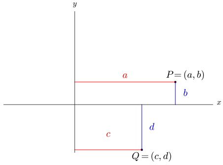
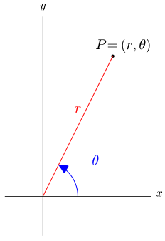
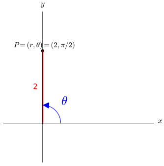
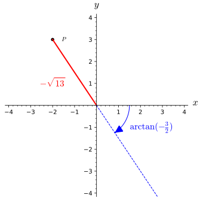
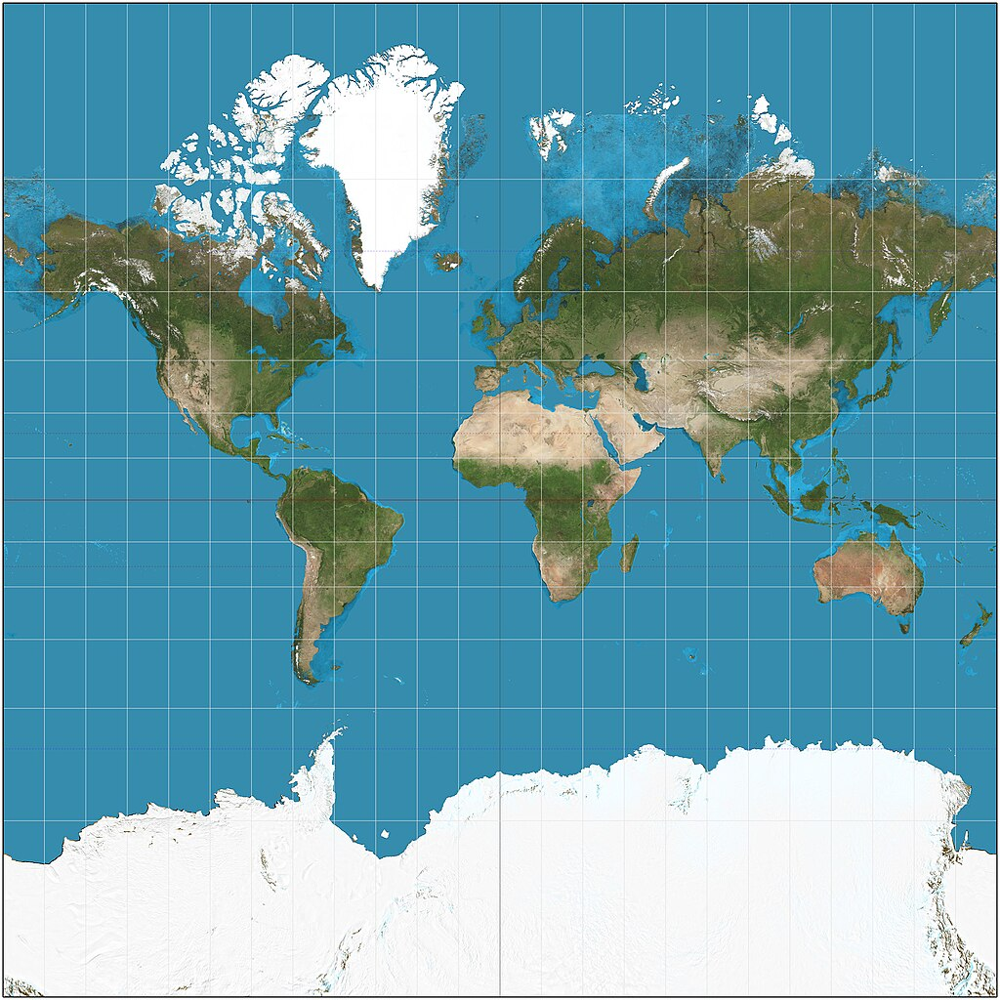

Section9.8Polar, Cylindrical, and Spherical Coordinates
Motivating Questions
What are the polar coordinates of a point, and how are they related to rectangular coordinates?
How can we convert coordinates of points or equations between rectangular and polar coordinates?
What are the cylindrical coordinates of a point, and how are they related to rectangular coordinates?
What are the spherical coordinates of a point, and how are they related to Cartesian coordinates?
How can we convert coordinates of points or equations between rectangular and spherical coordinates?
Preview Activity9.8.1.
(a)
State what quadrants the output of sine is positive, what quadrants the output of sine is negative, and where the output of sine is zero.
(b)
State what quadrants the output of cosine is positive, what quadrants the output of cosine is negative, and where the output of cosine is zero.
(c)
State what quadrants the output of tangent is positive, what quadrants the output of tangent is negative, where the output of tangent is zero, and where the output of tangent is undefined.
(d)
Figure9.8.1.A plot of point \(P\) with \(y\text{,}\)\(z\text{,}\) and \(r\) labeled
Given the plot of point \(P\) in Figure9.8.1, use trigonometry and the distance formula to find the following:
(a)
Find the x-coordinate of \(P\text{.}\)
(b)
Find the angle between the x-axis and the blue line segment.
(c)
Find the distance between the origin and \(P\text{.}\)
(e)
Figure9.8.2.A plot of point \(P\) with \(y\text{,}\)\(z\text{,}\) and \(r\) labeled
Given the plot of point \(P\) in Figure9.8.2, use trigonometry and the distance formula to find the following:
(a)
Find the x-coordinate of \(P\text{.}\)
(b)
Find the angle between the \(z\)-axis and the pink line segment.
(c)
Find the distance between the origin and \(P\text{.}\)
In this section we will define and work with a few new ways to specify the location of a point. These new measurements will be useful as coordinate systems and as a way of thinking about how to describe different shapes relative to rotational or other symmetries.
Subsection9.8.1Polar Coordinates
We define the rectangular coordinates to be signed distances from the point to the axes as shown below.

Figure9.8.3.A plot with the 2D coordinate measurements labeled
We define the polar coordinates of a point in two dimensions to be the signed distance from the origin to the point, denoted \(r\text{,}\) and the angle from the positive horizontal axis and the line segment connecting the origin and \(P\text{,}\) denoted \(\theta\text{.}\) The angle \(\theta\) is measured with the counterclockwise direction being positive.

Figure9.8.4.A plot with polar coordinate measurements labeled
A helpful way to visualize a location based on polar coordinates is to 1)stand at the origin, facing the positive horizontal axis, 2) turn \(\theta\) (with positive being the counterclockwise direction), and 3) move \(r\) in the direction you are facing.
Example9.8.5.
Our first example will look at the location given by \(P=(r,\theta)=(2,\frac{\pi}{2})\text{.}\) To understand where this point is, we do the following steps: 1) go to the origin and face the positive \(x\)-axis, 2) turn \(\frac{\pi}{2}\) counterclockwise (to the positive \(y\) axis), and 3) move two units.
Figure9.8.6.Starting orientation of polar coordinates
Rotate by \(\frac{\pi}{2}\) counterclockwise
Figure9.8.7.Rotate by \(\frac{\pi}{2}\) counterclockwise
Figure9.8.8.3) Move two units in this direction
Geometrically, we can see that this location would have rectangular coordinates of \((x,y)=(0,2)\text{.}\) While geometry is useful for understanding meaning, it is rarely wise to compute things like coordinates using geometric tools. In the next part, we will talk about algebraic tools that will allow us to convert between rectangular and polar coordinates.
Converting between Recangular and Polar coordinates.
Converting from Polar to Rectangular.
If we are given the Polar coordinates \((r,\theta)\) of a point \(P\text{,}\) then the rectangular coordinates \((x,y)\) of \(P\) satisfy
\begin{equation*}
x = r \cos(\theta) \ \ \ \ \ y = r \sin(\theta)
\end{equation*}
Converting from rectangular to polar.
If we are given the rectangular coordinates \((x,y)\) of a point \(P\text{,}\) then the polar coordinates \((r,\theta)\) of \(P\) satisfy
It is important to notice that the equations used in the conversion from polar to rectangular (\(x=r \cos(\theta)\) and \(y=r \sin(\theta)\)) work to convert coordinates of a point for any values of \(r\) and \(\theta\text{,}\) including negative \(r\)-values and values of \(\theta\) outside the interval \([0,2\pi]\text{.}\) The coversion equations to go from rectangular to polar require you to interpret the results of your calculation because we are not able to solve explicitly for \(r\) and \(\theta\) in terms of \(x\) and \(y\text{.}\) This is because there is not a unique set of polar coordinates for a location. A point can have many different polar coordinates that refer to the same location. For example, the point with rectangular coordinates \((-1,-1)\) can be given the polar coordintes \((r,\theta)=(\sqrt{2},\frac{5\pi}{4})\) or \((r,\theta)=(-\sqrt{2},\frac{-\pi}{4})\) or \((r,\theta)=(\sqrt{2},\frac{13\pi}{4})\) or \((r,\theta)=(\sqrt{2},-\frac{3\pi}{4})\) or \((r,\theta)=(-\sqrt{2},-\frac{7\pi}{4})\) or ... The good news is that when you need to choose appropriate \(r\) and \(\theta\) your experience with quadrants and where the point is (in terms of \(x\) and \(y\)) gives the necessary information to make proper choices.
Example9.8.9.
In this example, we will look at how to convert the points with rectangular coordinates \(P=(-2,3)\) and \(Q=(-3,-2)\) into polar coordinates. Note here that \(P\) is in the second quadrant and \(Q\) is in the third quadrant. Using the conversion equations for \(P=(-2,3)\text{,}\) we see that
which means we need to pick \(r\) to be either \(\pm \sqrt{13}\text{.}\) We will need to pick an appropriate angle for these possible \(r\)-values that satisfy \(\tan(\theta) = -\frac{3}{2}\text{.}\) There are angles in the fourth and second quadrants that will satisfy \(\tan(\theta) = -\frac{3}{2}\text{,}\) namely \(\arctan(-\frac{3}{2})\) and \(\pi +\arctan(-\frac{3}{2})\text{.}\) You could also choose any angle coterminal to either of these angles. This is not a situation where any of the choices of \(r\) will work with any choice of \(\theta\text{.}\) We need to interpret these choices together to get a description for the correct location. If you want to choose \(r=\sqrt{13}\) then you will need to select the angle that cooresponds to the second quadrant, \(\pi = \arctan(-\frac{3}{2})\text{,}\) to get polar coordinates \(P=(r,\theta)=(\sqrt{13},\pi+\arctan(-\frac{3}{2}))\text{.}\) If you wanted to not have to use the complementary angle to \(\arctan(-\frac{3}{2})\text{,}\) you will need to use the negative value of \(r\) to get \(P=(r,\theta)=(-\sqrt{13},\arctan(-\frac{3}{2}))\text{.}\)
Figure9.8.10.A visualization of \(P\) with polar coordinates \((\sqrt{13},\arctan(-\frac{3}{2}))\)
A 2D plot of the point with polar coordinates \((-\sqrt{13},\arctan(\pi-\frac{3}{2}))\)
Figure9.8.11.A visualization of \(P\) with polar coordinates \((-\sqrt{13},\arctan(\pi-\frac{3}{2}))\)
Remember that inverse trig functions have limited domains and ranges, the \(r\)-coordinate can be positive or negative, and polar coordinates do not have unique values for a given point.
Activity9.8.2.
For each of the points listed below, you should:
Graph the point on a set of axes and label how each of the rectangular coordinates is measured.
Draw and label how the polar coordinates are measured for each point.
Compute the exact value of \(r\) and \(\theta\) for each point. Exact values include things like \(\sqrt{3}\text{,}\)\(\arcsin(3/4)\text{,}\) etc. You should simplify the trig function values of any common angles you encounter, like \(\sin(\frac{\pi}{3})=\frac{\sqrt{3}}{2}\text{.}\)
(a)
\((x,y)=(-3,-7)\)
(b)
\((x,y)=(7,-3)\)
(c)
\((x,y)=(\sqrt{5},-2)\)
(d)
\((x,y)=(\frac{3}{2},-\frac{3}{2})\)
(e)
\((x,y)=(\frac{3}{2},\frac{3}{2})\)
Activity9.8.3.
For each of the points listed below, you should:
Graph the point on a set of axes and label how each of the polar coordinates is measured.
Draw and label how the rectangular coordinates are measured for each point.
Compute the exact value of \(x\) and \(y\) for each point. Exact values include things like \(\sqrt{3}\text{,}\)\(\arcsin(3/4)\text{,}\) etc. You should simplify the trig function values of any common angles you encounter, like \(\sin(\frac{\pi}{3})=\frac{\sqrt{3}}{2}\text{.}\)
We now want to look at converting an equation between rectangular and polar coordinates. Remember that the graph of an equation is the set of all points that satisfy the equation, so when we say that we want to convert an equation, like \(x=y^2\) to polar coordinates, we meant that we want to find an equation in \(r\) and \(\theta\) whose graph will be exactly the same set of points as \(x=y^2\text{.}\) This will be fairly easy because we have conversion equations that are solved explicitly for \(x\) and \(y \) (\(x=r\cos(\theta)\) and \(y=r\sin(\theta)\)) and do not require interpretation.
Example9.8.12.
We can convert the equation \(x=y^2\) to polar coordinates by substituting \(x=r\cos(\theta)\) and \(y=r\sin(\theta)\) to get
\begin{align*}
x =\amp y^2 \\
r \cos(\theta) =\amp (r \sin(\theta)^2) \\
r \cos(\theta) =\amp r^2 \sin(\theta)^2 \\
\frac{\cos(\theta)}{\sin(\theta)^2} =\amp r\\
r =\amp \cot(\theta) \csc(\theta)
\end{align*}
So, the \((r,\theta)\) points that satisfy \(r = \cot(\theta) \csc(\theta)\) are the same locations as the \((x,y)\) points that satisfy \(x=y^2\text{.}\)Except, we divided by \(\sin(\theta)\text{,}\) which will not give an equivalent equation if \(\sin(\theta)=0\text{.}\) Notice that if \(\theta=0\) (or any integer multiple of \(\pi\)), then \(\cot(0) \csc(0)\) does not exist. So in a technical sense, we would either need to stop our algebra at \(cos(\theta)=r \sin(\theta)^2\) or use a piecewise defined expression like
This examples highlights the tricky part of converting equations; Without careful algebraic steps, you can miss points or get nonsensical statements. Often we will use geometric intuition and information to help convert equations between coordinate systems and make sense of the resulting expressions.
Example9.8.13.
In this example, we will convert the equation \(r=3\cos(\theta)\) into rectangular coordinates, identify the shape of its graph, and plot the graph of this equation. Remember that we do not have explicit conversion equations for \(r\) and \(\theta\text{,}\) but we do have some equations, like \(r^2=x^2+y^2\) which will allow us to convert to an expression in \(x\) and \(y\) that does not require intepretation. Lets try to square both sides of our polar equation, since this will give us an expression on the left hand side of the equation that will be easy to conver to rectangular coordinates.
Our last equation is a mix of rectangular and polar coordinates so we are not done with our coversion to rectangular (just \(x\) and \(y\)) coordinates. Unfortunately the easiest way to convert \((\cos(\theta))^2\) to rectangular is to use
which will give us a rational expression for our conversion. This wil require some extra algebra and interpretation, so lets try a slightly different approach. Instead of squaring both sides of our polar equation, what if we multiply both sides by \(r\text{.}\) You may have seen this as a better approach from the start or gained this insight after our work above. Remember, there are multiple paths to insight and being able to incorporate new ideas and information to form new strategies is a vital skill to solving interesting and realistic problems. So, if we multiple both sides of our original equation by \(r\text{,}\) then we get
\begin{equation*}
r =3\cos(\theta) \Rightarrow r^2=3 r \cos(\theta)
\end{equation*}
This equation is great because both the left and right hand sides have conversions to rectangular coordinates that do NOT require interpretation or cases. So, the \((r,\theta)\) points that satisfy \(r = 3 cos(\theta)\) are the same locations as the \((x,y)\) points that satisfy \(x^2+y^2=3x\text{.}\)
We have now converted our polar equation to a rectangular equation. What shape will the graph of \(x^2+y^2=3x\) (or \(r = 3 cos(\theta)\)) be? A translated circle that we can do some algebra (complete the square technique) to put into the the standard form of a circle (\((x-h)^2+(y-k)^2 = R^2\)).
We can see now that this circle will have center \((\frac{3}{2},0)\) and radius \(\frac{3}{2}\text{.}\) The graph of \(r =3\cos(\theta)\) is the same as \(x+y^2=3x\) or \((x -\frac{3}{2})^2 +(y-0)^2 =\left(\frac{3}{2}\right)^2\) which has the graph
Figure9.8.14.A plot of \(r=3\cos(\theta)\)
While many people will find the rectangular equation more comfortable to graph and explain, this conversion is not always needed. You can find many resources on plotting points of a polar equation without converting to rectangular coordinates, especially when one coordinate (typically \(r\)) is solved explicitly in terms of the other coordinate.
Plot each of the eleven points you found in the previous part on the polar plane and connect them to make a plot of the graph of \(r=\cos(\theta)\text{.}\)
(d)
Graph the equation \(r=1+\cos(\theta)\) in the polar plane.
(e)
Graph the equation \(r=1-\cos(\theta)\) in the polar plane.
(f)
What are the points of intersections for the graphs of \(r=1+\cos(\theta)\) and \(r=1-\cos(\theta)\)
Activity9.8.5.
For each of the equations given below, do each of the following:
Convert the equation to the other coordinate system (either rectangular to polar or polar to rectangular).
State the shape of the graph for the equation and any other information needed to graph
Graph the given equation and write a description for how the converted equation (from part a) makes sense in terms of your graph.
(a)
\(r=2\)
(b)
\(\theta=\frac{\pi}{3}\)
(c)
\(x=-1\)
(d)
\(y=2\)
(e)
\(y=-x\)
(f)
\(r=\frac{3}{1-2\cos(\theta)}\)
In Figure9.2.1, you saw how easy it was to read rectangular coordinates of a point when you had a rectangular grid. A polar point grid gives the same tools by plotting an array of constant coordinate graphs. An example of a polar grid is given below.
Write a few sentences to describe what the graph of \(r=c\) looks like, where \(c\) is a constant. You should consider what values of \(c\) will correspond to different shapes.
(b)
Write a few sentences to describe what the graph of \(\theta=d\) looks like, where \(d\) is a constant. You should consider what values of \(d\) will correspond to different shapes.
The last idea of conversion we will look at between rectangular and polar coordinates is how to convert regions or inequalities between coordinate systems. Just as a graph of a an equation is a plot of the set of points that satisfies the equation, the graph of an inequality (or set of inequalities) is the region of points that satisfy the inequality.
Example9.8.17.
The graph of the inequality \(-1\leq x \leq 1\) is the vertical strip of points with horizontal coordinate between negative one and one (inclusive) and has graph given by
Figure9.8.18.A plot of \(-1\leq x \leq 1\)
If we consider the set of inequalities given by \(-1\leq x \leq 1\) and \(0\leq y \leq 2\text{,}\) then we are looking for the region of points that satisfies both inequalities. The second inequality is shown in red on the left plot and the intersection of the two plots corresponds to the region described by \(-1\leq x \leq 1\) and \(0\leq y \leq 2\text{,}\) which is plotted in blue on the right below.
Figure9.8.19.A plot of \(0\leq y \leq 2\)
Figure9.8.20.A plot of \(-1\leq x \leq 1\) and \(0\leq y \leq 2\)
Activity9.8.7.
(a)
Make a graph of the points that satisfy \(y=x+1\text{.}\)
(b)
Make a graph of the points that satisfy \(y \geq x+1\text{.}\)
Hint.
Will the points above or below the line you drew in the first part of this activity satisfy this inequality.
(c)
Make a graph of the points that satisfies the inequality \(x^2+y^2 \leq 4\)
(d)
Make a graph of the points that satisfies the inequalities \(x^2+y^2 \leq 4\) and \(y \geq x+1\text{.}\)
Activity9.8.8.
(a)
Draw a plot of the region that cooresponds to the polar inequality \(1 \leq r \leq 3\text{.}\) Write a sentence or two to describe this region.
(b)
Draw a plot of the region that cooresponds to the polar inequality \(\frac{\pi}{4} \leq \theta \leq \frac{3\pi}{4}\text{.}\) Write a sentence or two to describe this region.
(c)
Draw a plot of the region that cooresponds to the polar inequalities \(1 \leq r \leq 3\text{,}\)\(\frac{\pi}{4} \leq \theta \leq \frac{3\pi}{4}\text{.}\) Write a sentence or two to describe this region.
(d)
Draw a plot of the region that cooresponds to the polar inequality \(1 \leq r \leq 3 \cos(\theta)\text{.}\) Write a sentence or two to describe this region.
Subsection9.8.2Cylindrical Coordinates
We have encountered two different coordinate systems in \(\R^2\) the rectangular and polar coordinates systems and seen how in certain situations, polar coordinates form a convenient alternative. In a similar way, there are two additional coordinate systems in \(\R^3\) that come from different ideas of rotational measurement. Given that we are already familiar with the Cartesian coordinate system for \(\R^3\text{,}\) we next investigate the cylindrical and spherical coordinate systems (each of which builds upon polar coordinates in \(\R^2\)). In what follows, we will see how to convert among the different coordinate systems (for coordinates, equations, and inequalities), and some situations in which these other coordinate systems prove advantageous.
As we sw earlier, polar coordiantes will be an advantageous coordinate system when considering points/graphs/regions which have rotationally symmetric properties with respect to the origin. We can bring these ideas in 3D coordinates in two ways, cylindrical and spherical coordinates. Cylindrical coordinates are a coordinate system for \(\mathbb{R}^3\) that consists of using polar coordinates in place of \(x\) and \(y\) coordinates. Cylindrical coordinates are stated as \((r,\theta,z)\) and are can be described as "polar plus z". The \(z\) coordinate is measured the same way as in rectangular coordinates (signed distance above or below the \(xy\)-plane) and polar coordinates are measured as a projection of the 3D point onto the \(xy\)-plane. For rectangular-cylindrical coordinates, we use the same conversion equations as rectangular-polar coordinates.
Figure9.8.21.The cylindrical coordinates of a point
Converting between Rectangular and Cylindrical coordinates.
Converting from Cylindrical to Rectangular.
If we are given the Cylindrical coordinates \((r,\theta,z)\) of a point \(P\text{,}\) then the Rectangular coordinates \((x,y,z)\) of \(P\) satisfy
\begin{equation*}
x = r \cos(\theta) \ \ \ \ \ y = r \sin(\theta) \ \ \ \ \ \text{ and } \ \ \ \ \ z = z.
\end{equation*}
Converting from Rectangular to Cylindrical.
If we are given the Rectangular coordinates \((x,y,z)\) of a point \(P\text{,}\) then the Cylindrical coordinates \((r,\theta,z)\) of \(P\) satisfy
For our first example, we will look at the point with cylindrical coordinates \((r,\theta,z)=(\sqrt{5},\frac{3\pi}{4},-2)\text{.}\) This point is shown in the figure below with the measurements of the cylindrical coordinates.
Figure9.8.23.A plot of \((r,\theta,z)=(\sqrt{5},\frac{3\pi}{4},-2)\)
To convert our cylindrical coordinates to rectangular, we can use \(x = r \cos(\theta) , y = r \sin(\theta)\) to get rectangular coordinates of \((x,y,z)=(-\frac{\sqrt{10}}{2},\frac{\sqrt{10}}{2},-2)\text{.}\)
(b)
In this example we want to find a set of cylindrical coordinates for a point with rectangular coordinates \((x,y,z)=(-2,1,2)\text{.}\) Remember that just as the polar coordinates of a point in 2D are not unique, the cylindrical coordinates of a point in 3D will not be unique. Using our conversion equations from rectangular to cylindrical, we get \(r^2=(-2)^2+(1)^1=5\) and \(\tan(\theta)= \frac{1}{-2}\text{.}\) Remember that we will need to interpret the angle and our choice of \(r\) to make sure our coordinates describe a point in the second octant. In particular, we will choose a positive \(r\) value of \(\sqrt{5}\) which means we will need to select an angle of \(\arctan(-\frac{1}{2})+\pi\text{.}\) Alterntatively, we can use \(\cos(\theta)=\frac{x}{r}\) since \(/arccos\) will give an output of an angle in the first or second quadrants. You can verify that \(\theta = \arctan(-\frac{1}{2})+\pi = \arccos(-\frac{2}{\sqrt{5}})\text{.}\) So rectangular coordinates \((x,y,z)=(-2,1,2)\) will coorespond to cylindrical coordinates of \((r,\theta,z)= (\sqrt{5},\arctan(-\frac{1}{2})+\pi,2)\) or \((r,\theta,z)= (\sqrt{5},\arccos(-\frac{2}{\sqrt{5}},2) )\text{.}\)
Figure9.8.24.A plot of \((x,y,z)=(-2,1,2)\)
(c)
In our earlier work, we saw how the graph of \(\theta=2\) will be a line with slope \(\tan(2)\text{.}\) If we consider only positive \(r\) coordinates then we get a ray with an angle of 2 radians from the positive \(x\)-axis. If we wanted to consider the graph of \(\theta=2\) as cylindrical coordinates (in 3D), then we get a plane that contains the \(z\)-axis and goes in the \(\theta=2\) direction. This is a cylinder surface with the line given by \(y=tan(2) x\) as the generating curve and rulings parallel to the \(x\)-axis.
Figure9.8.25.A plot of \(\theta=2\) with positive \(r\) values in blue and negative \(r\) values in green
(d)
In this example we will convert the elliptic paraboloid given by \(z=x^2+y^2\) to cylindrical coordinates. Algebraically, this is very simple because we can substitute \(r^2=x^2+y^2(\theta)\) to get \(z=r^2\text{.}\) This should make sense for the graph of the elliptic paraboloid because the graph is rotationally symmetric around the \(z\)-axis (which comes from not having an explicit \(\theta\) dependence in the equation) and the height of the surface above the \(xy\)-plane increases quadratically as the location moves away from the \(z\)-axis.
Figure9.8.26.A plot of \(\theta=2\) with positive \(r\) values in blue and negative \(r\) values in green
Activity9.8.9.
(a)
Convert \((x,y,z)=(1,2,3)\) to cylindrical coordinates.
(b)
Describe the region given by the 6th octant in terms of inequalities for cylindrical coordinates.
(c)
Convert the basic cone, given by \(z^2=x^2+y^2\) to cylindrical coordinates. Write a couple of sentences to make sense of how you can simplify your conversion and describe the shape of the graph in terms of \(z\) and \(r\text{.}\)
(d)
Draw a plot of the surface given by \(r=2\text{.}\) Write a couple of sentences about the shape and properties of this surface.
(e)
Draw a plot of the region given by \(0 \leq \theta \leq \pi \quad , 0 \leq r \leq 2 \quad , 0 \leq z \leq r^2 \)
These activities are meant not only to give you some algebraic experience with the cylindrical coordinate measurements, but also some examples where you should make sense of your results from a geometric perspective.
Activity9.8.10.
In this activity, we graph some surfaces using cylindrical coordinates. To improve your intuition and test your understanding, you should first think about what each graph should look like before you plot it using appropriate technology.
What familiar surface is described by the points in cylindrical coordinates with \(r=2\text{,}\)\(0 \leq \theta \leq 2\pi\text{,}\) and \(0 \leq z \leq 2\text{?}\) How does this example suggest that we call these coordinates cylindrical coordinates? How does your answer change if we restrict \(\theta\) to \(0 \leq \theta \leq \pi\text{?}\)
What familiar surface is described by the points in cylindrical coordinates with \(\theta=2\text{,}\)\(0 \leq r \leq 2\text{,}\) and \(0 \leq z \leq 2\text{?}\)
What familiar surface is described by the points in cylindrical coordinates with \(z=2\text{,}\)\(0 \leq \theta \leq 2\pi\text{,}\) and \(0 \leq r \leq 2\text{?}\)
Plot the graph of the cylindrical equation \(z=r\text{,}\) where \(0 \leq \theta \leq 2\pi\) and \(0 \leq r \leq 2\text{.}\) What familiar surface results?
Plot the graph of the cylindrical equation \(z= \theta\) for \(0 \leq \theta \leq 4 \pi\text{.}\) What does this surface look like?
Solution.
In polar coordinates, the graph of \(r=2\) is a circle centered at the origin with radius 2. Extending this to cylindrical coordinates, we obtain a cylinder centered at the origin of radius 2, with base on the \(xy\)-plane and height 2.
In polar coordinates, the graph of \(\theta = 2\) is a line through the origin making an angle of 2 radians with the positive \(x\)-axis. Extending this to cylindrical coordinates, the graph of \(\theta=2\) is a plane through the origin perpendicular to the \(xy\)-plane making an angle of 2 radians with the \(xz\)-plane.
The graph of \(z=2\) is just a plane parallel to the \(xy\)-plane at a distance 2 above the \(xy\)-plane. With \(0 \leq \theta \leq 2\pi\) and \(0 \leq r \leq 2\text{,}\) the graph of \(z=2\) is just a disk of radius 2 centered at \((0,0,2)\) within the plane \(z=2\text{.}\)
For a fixed value of \(r\text{,}\) the graph of \(z=r\) and \(0 \leq \theta \leq 2\pi\) is a circle of radius \(r\) in the plane \(z=r\text{.}\) As \(r\) increases the radii increase, so we will obtain a cone with base at the origin, opening up with height \(2\text{.}\)
For a fixed \(\theta\text{,}\) the graph of \(z=\theta\) is a line in the \(z = \theta\) plane making an angle of \(\theta\) with the \(xz\)-plane. Allowing \(\theta\) to vary will produce a set of lines, spiraling upward so that the result looks like a bit of an auger.
Subsection9.8.3Spherical Coordinates
Cylindrical coordinates used an angular measurement in the \(xy\)-plane as part of the description of location. Spherical coordinates uses one linear measurement and two angular measurements to specify the location of a point. The spherical coordinates of a point in \(\R^3\) are \(\rho\) (rho), \(\theta\text{,}\) and \(\phi\) (phi), where \(\rho\) is the distance from the point to the origin, \(\theta\) has the same interpretation it does in polar coordinates, and \(\phi\) is the (smallest) angle between the positive \(z\)-axis and the vector from the origin to the point, as illustrated in Figure9.8.27. You should convince yourself that any point in \(\R^3\) can be represented in spherical coordinates with \(\rho \geq 0\text{,}\)\(0 \leq \theta \lt 2 \pi\text{,}\) and \(0 \leq \phi \leq \pi\text{.}\)
Figure9.8.27.A plot of a point \(P\) with spherical coordinate measurement
Coverting between rectangular and spherical coordinates.
Converting from rectangular to spherical.
If we are given the Cartesian coordinates \((x,y,z)\) of a point \(P\text{,}\) then the spherical coordinates \((\rho,\theta,\phi)\) of \(P\) satisfy
where in the latter two equations, we require \(x \ne 0\) and \(\rho \ne 0\text{.}\)
Converting from spherical to rectanglur.
If we are given the spherical coordinates \((\rho,\theta,\phi)\) of a point \(P\text{,}\) then the Cartesian coordinates \((x,y,z)\) of \(P\) satisfy
\begin{equation*}
x = \rho \sin(\phi) \cos(\theta) \ \ \ \ \ y = \rho \sin(\phi) \sin(\theta) \ \ \ \ \ \text{ and } \ \ \ \ \ z = \rho \cos(\phi)
\end{equation*}
Example9.8.28.
In the following example, we investigate how to think about the spherical coordinate measurement of a point and how to convert between spherical coordinates and rectangular coordinates.
Figure9.8.29.A plot of a point \(P\) with spherical coordinate measurement
Consider the point \(P\) whose rectangular coordinates are \((-2,2,\sqrt{8})\text{.}\) What is the distance from \(P\) to the origin? The result is the value of \(\rho\) in the spherical coordinates of \(P\text{,}\) so
in order to find the \(\theta\) coordinate of \(P\text{,}\) we will need to determine the point that is the projection of \(P\) onto the \(xy\)-plane. Then, use this projection to find the value of \(\theta\) in the polar coordinates of the projection of \(P\) that lies in the plane. The projection of \(P\) onto the \(xy\)-plane is the point \((-2,2,0)\text{.}\) As we saw earlier with polar and cylindrical coordinates, we can use \(\tan(\theta) = \frac{y}{x}\) which for the point \(P\) means that \(\tan(\theta) = \frac{-2}{2}=-1\text{.}\) Remember that you will need to interpret the result of inverse trig functions according to the particular geometric situation given in the problem. In particular, \(\arctan(-1)=-\frac{\pi}{4}\) but we want will need to interpret \(\theta\) as a an angle in the second quadrant, we will use \(\theta=\frac{3\pi}{4}\text{.}\)
Based on the illustration in Figure9.8.29, we can use the right triangle with sides that correspond to the measurement of \(z\text{,}\)\(r\text{,}\) and \(\rho\) to find the angle \(\phi\text{.}\) It may not be immediately clear where the angle \(\phi\) is in this triangle, but Figure9.8.30 shows how the alternate interior angles of the parallel lines (associated with \(z\) will be equal. In other words, the upper right angle in our right triangle will be the same size as \(\phi\)).
Figure9.8.30.A 2D plot of a point \(P\) with spherical coordinate measurements in the plane of the measurement of \(\theta\)
So we can calculate the \(\phi\)-coordinate of \(P\) using the property that \(\cos(\phi) = \frac{z}{\rho}=\frac{\sqrt{8}}{4}=\frac{\sqrt{2}}{2}\text{,}\) which means that \(\phi=\frac{\pi}{4}\text{.}\)
The point \(P\) with rectangular coordinates \((-2,2,\sqrt{8})\) will be given by spherical coordinates of \((\rho,\theta,\phi)=(4,\frac{3\pi}{4},\frac{\pi}{4})\text{.}\)
Activity9.8.11.
(a)
Use Assemblage to find the rectangular coordinates of the following points:
Draw each of the points from part9.8.11.a and show how the spherical coordinates of each point is being measured. You should use your plots to make sense of the rectangular coordinate measurements that were your answer to part9.8.11.a.
Example9.8.31.
In this example we will look at converting equations and surfaces between rectangular and spherical coordinates. First, we will consider the surface defined by \(\rho = 2\text{.}\) Geometrically, we can think about \(\rho =2 \) as the set of points that are two units away from the origin, which creates a sphere of radius 2. Algebraically, we can square both sides of our equation to get \(\rho^2=4\) and since \(\rho^2=x^2+y^2+z^2\text{,}\) the spherical coordinate equation \(\rho =2\) corresponds to the rectangular equation \(x^2+y^2+z^2=4\text{.}\) In fact, for all positive values of \(k\text{,}\) the surface \(\rho =k\) will be a sphere of radius \(k\text{.}\)
Next, we consider how to convert the equation of the half cone given by \(z^2=2x^2+y^2\) where \(z \geq 0 \) to spherical coordinates. Algebraically, we can use a couple of ideas from our conversion equations that include \(z=\rho \cos(\phi)\) and \(r^2= \rho^2 \sin(\phi)^2\text{.}\) Specifically, this means that
Since we are considering the part of the cone with \(z \geq 0 \text{,}\) we can use \(\phi = \arctan(\sqrt{2})\text{.}\) This should not be that suprising that half cones centered on the \(z\)-axis coorespond to a constant value of \(\phi\text{.}\)
Figure9.8.32.A plot of the half cone \(x^2+y^2+z^2=4\) with measurement of \(\phi\) shown in orange
If we considered the bottom half of the cone given by \(z^2=2x^2+y^2\) where \(z \leq 0 \text{,}\) we would need to find the angle \(\phi\) between \(\frac{\pi}{2}\) and \(\pi\) that satisfies \(\tan(\phi)=\sqrt{2}\text{.}\) Using complementary angles we see that the bottom half of the cone given by \(z^2=2x^2+y^2\) where \(z \leq 0 \) corresponds to the spherical equation \(\phi = \pi - \arctan(\sqrt{2})\text{.}\)
Figure9.8.33.A plot of the botom half of the cone \(x^2+y^2+z^2=4\) with measurement of \(\phi\) shown in orange
Finally, we consider how to convert the plane given by \(z=x+y\) to spherical coordinates. We can use \(x = \rho \sin(\phi) \cos(\theta)\text{,}\)\(y = \rho \sin(\phi) \sin(\theta)\text{,}\) and \(z = \rho \cos(\phi)\) to get the following set of algebraic simplifications:
If the graph of \(\tan(\phi) = \cos(\theta) + \sin(\theta)\) seems unfamiliar, that is normal. This is not an expression you have (probably) seen before and does not simplify or offer geometric insight. This example shows how easily converting equations between coordinate systems without some geometric reasoning as to why can quickly turn into an exercise of algebra without much meaning.
Activity9.8.12.
For many students, the measurement of \(\phi\) is the most difficult and most unfamiliar measurement for spherical coordinates. In order to help understand the measurement of the \(\phi\)-coordinate, we will look at the collection of points described by a constant value of \(\phi\text{.}\) For each of the equations below, you should:
Draw a plot of the points that satisfy that equation. For some equations, your plot will be a path in space and others will correspond to a surface. You should draw how the \(\phi\)-coordinate is measured and related to the graph.
Write a sentence or two that describes the shape and features of your plot of the equation. You should mention any other descriptions that could be applied to your set of points, like axes or coordinate planes.
(a)
\(\phi =0\)
(b)
\(\phi =1\)
(c)
\(\phi =\frac{\pi}{2}\)
(d)
\(\phi =\frac{3\pi}{4}\)
(e)
\(\phi = \pi\)
Activity9.8.13.
For each of the surfaces described below,
find a corresponding equation in spherical coordinates (involving only \(\rho\text{,}\)\(\theta\text{,}\) and \(\phi\)). You may want to consider algebraic or geometric approaches to these problems
draw a plot of surface and label any important measurements in terms of the spherical coordinates
write a sentence or two about the corresponding equation in spherical coordinates and any assumptions made in your work.
(a)
the xy-plane
(b)
the xz-plane
(c)
\(z=x^2+y^2\)
Example9.8.34.
In this example, we want to visualize and go over some tips for thinking about the region given by the spherical coordinates \(0 \leq \theta \leq \pi \text{,}\)\(1 \leq \rho \leq 2 \text{,}\) and \(\frac{\pi}{4} \leq \phi \leq \pi\text{.}\) We will look at these inequalities in sequence to figure out what the set of points that satisfies all three looks like. Our first inequality, \(0 \leq \theta \leq \pi \text{,}\) corresponds to all points in the first, second, fifth, and sixth octants. Many students draw this region with a spherical outer boundary, but with no restrictions on the other coordinates, your plot should emphasize that the region continues throughout all of these octants (without an outer boundary).
Figure9.8.35.A plot of the region \(0 \leq \theta \leq \pi \)
We now want to think about the set of points that satisfy \(0 \leq \theta \leq \pi \) and \(1 \leq \rho \leq 2 \text{.}\) The region given by \(1 \leq \rho \leq 2 \) is the set of points between the spheres of radius 1 and radius 2 centered at the origin. So the region given by \(0 \leq \theta \leq \pi \) and \(1 \leq \rho \leq 2 \) is the part of the points between the spheres of radius 1 and radius 2 centered at the origin with positive \(x\)-cooridnates.
Figure9.8.36.A plot of the region \(0 \leq \theta \leq \pi \) and \(1 \leq \rho \leq 2 \)
When we consider the additional restriction of \(\frac{\pi}{4} \leq \phi \leq \pi\text{,}\) then we get the part of the region (shown in Figure9.8.36) that is also below the cone given by \(\phi =\frac{\pi}{4}\text{.}\) This gives the region shown in Figure9.8.37. Note that we have shown each of the boundary surfaces in different colors so you can see how each of the upper or lower bounds on each of the coordinates gives rise to a different part of our region.
Figure9.8.37.A plot of the region \(0 \leq \theta \leq \pi \text{,}\)\(1 \leq \rho \leq 2 \text{,}\) and \(\frac{\pi}{4} \leq \phi \leq \pi\)
Activity9.8.14.
(a)
Draw the region described by \(\rho \leq 1\) and \(0 \leq \phi \leq \frac{\pi}{2}\text{.}\)
(b)
Draw the region described by \(x^2+y^2 \leq 9\) with \(x\leq y\) and \(-1 \leq z \leq 3\)
(c)
Give a set of inequalities in spherical coordinates that describes the points in the seventh octant.
Example9.8.38.
The idea of lattitude and longitude are the most familiar use of spherical coordinates. In particular, if you look at a globe as a map of the earth, then you will notice a grid of lines that run from the top to bottom or around the globe (horizontally). These lines measure latittude and longitude of different locations on the surface of the Earth. This lattitude and longitude method of describing locations is actually spherical coordinates with a (slightly incorrect) assumption that the surface of the Earth is at a constant value of \(\rho\text{.}\) If you look at the lines of longitude and lattitude on a globe, you will see that these are actually angular measurements because each line in the grid is marked with a degree measurement. Lattitude describes how far a location is north or south of the equator and corresponds to a shifted measurement of the spherical coordinate \(\phi\text{.}\) Specifically, a lattitude of \(0^\circ\) corresponds to the equator, which corresponds to points on the surface of the sphere with \(\phi = \frac{\pi}{2} = 90^\circ \text{.}\) The location identified with the top of the globe is often called the North pole and corresponds to a lattitude of \(90^\circ\) North and a spherical coordinate measurement of \(\phi = 0\text{.}\) Similarly, the bottom of the globe is called the South pole and corresponds to a lattitude of \(90^\circ\) South and a spherical coordinate measurment of \(\phi=\pi=180^\circ\text{.}\) So you can convert between lattitude and \(\phi\) measurements by \(\phi = 90^\circ + \text{lattitude}\text{,}\) where north lattitudes are considered negative and south lattitudes are considered positive.
Figure9.8.39.A plot of lines of constant lattitude (in red) and longitude (in blue), with labels for the North and South Poles as well as the equator
The blue curves in Figure9.8.39 are lines with constant longitude. Longitude corresponds to an angular measurement of how far around (horizontally) on the surface of the sphere. Longitude corresponds to a shifted version of the \(\theta\) coordinate. Lines of Longitude are called meridians and the Prime Meridian corresponds to the meridian that goes through the Greenwich Naval Observatory in Greenwich England. If you were to flatten out the surface of the globe to make the lattitude and longitude lines form a rectangular grid, then you get a Mercator Projection map which you may recoginize. While these flat maps are convienent there is a considerable amount of distortion in these maps as you get closer to the poles. As you can see in Figure9.8.39, the lines with constant lattitude are NOT all the same length, but need to be stretched out considerably near the poles to get a nice rectangular grid, as in Figure9.8.40. Measuring the distortion of area (and later volume) based on these coordinates will be an important idea in the later part of Chapter12.

Figure9.8.40.A Mercator projection of the Earth with lattitude and longitude lines By Strebe - Own work, CC BY-SA 3.0, https://commons.wikimedia.org/w/index.php?curid=17700069
If we extended the grid of latitude and longitude to allow for multiple radii of spheres, we get a spherical coordinate grid as shown below in Figure9.8.41. You can see how visually cluttered this grid gets and why you will likely not see this idea used in plotting again.
Figure9.8.41.A plot of a grid of spherical coordinates
Subsection9.8.4Summary
The cylindrical coordinates of a point \(P\) are \((r,\theta,z)\) where \(r\) is the distance from the origin to the projection of \(P\) onto the \(xy\)-plane, \(\theta\) is the angle that the projection of \(P\) onto the \(xy\)-plane makes with the positive \(x\)-axis, and \(z\) is the vertical distance from \(P\) to the projection of \(P\) onto the \(xy\)-plane. When \(P\) has rectangular coordinates \((x,y,z)\text{,}\) it follows that its cylindrical coordinates are given by
When \(P\) has given cylindrical coordinates \((r,\theta,z)\text{,}\) its rectangular coordinates are
\begin{equation*}
x = r \cos(\theta), \ \ \ \ \ y = r \sin(\theta), \ \ \ \ \ z = z.
\end{equation*}
The spherical coordinates of a point \(P\) in 3-space are \(\rho\) (rho), \(\theta\text{,}\) and \(\phi\) (phi), where \(\rho\) is the distance from \(P\) to the origin, \(\theta\) is the angle that the projection of \(P\) onto the \(xy\)-plane makes with the positive \(x\)-axis, and \(\phi\) is the angle between the positive \(z\) axis and the vector from the origin to \(P\text{.}\) When \(P\) has Cartesian coordinates \((x,y,z)\text{,}\) the spherical coordinates are given by
What are the cylindrical coordinates of the point whose spherical coordinates are
\((2 ,\ 2 ,\ \frac{1 \pi}{6} )\) ?
\(r\) =
\(\theta\) =
\(z\)=
4.
Find an equation for the paraboloid \(z = x^{2}+y^{2}\) in spherical coordinates. (Enter rho, phi and theta for \(\rho\text{,}\)\(\phi\) and \(\theta\text{,}\) respectively.)
Consider the solid region \(S\) bounded above by the paraboloid \(z = 16 - x^2 - y^2\) and below by the paraboloid \(z = 3x^2 + 3y^2\text{.}\)
(a)
Describe parametrically the curve in \(\R^3\) in which these two surfaces intersect.
Solution.
Setting \(16-x^2-y^2\) equal to \(3x^2+3y^2\) yields the equation \(x^2+y^2=4\text{.}\) When \(x^2+y^2=4\text{,}\) we have \(z = 12\text{.}\) This is the circle centered at \((0,0,12)\) with radius 2 in the \(z=12\) plane, and has the parameterization \(x(t) = 2\cos(t)\text{,}\)\(y(t) = 2\sin(t)\text{,}\) and \(z=12\) for \(0 \leq t \leq 2\pi\text{.}\)
(b)
In terms of \(x\) and \(y\text{,}\) write an equation to describe the projection of the curve onto the \(xy\)-plane.
Solution.
The projection of this intersection curve onto the \(x\)-\(y\) plane is the circle centered at the origin of radius 2 and has parameterization \(x(t) = 2\cos(t)\) and \(y(t) = 2\sin(t)\) for \(0 \leq t \leq 2\pi\text{.}\)
(c)
What coordinate system do you think is most natural for an iterated integral that gives the volume of the solid?
Solution.
With the projection as a circle and the surfaces defined in terms of \(x^2+y^2\text{,}\) cylindrical coordinates seem a natural choice.
(d)
Set up a set of inequalities in whichever coordinate system you choose that will describe the solid volume \(S\text{.}\)
Solution.
\(0 \geq z \geq 2\pi , \quad 0 \geq z \geq 2 , \quad 3r^2 \geq \theta \geq 16-r^2\)
(e)
Try to draw a plot of the solid volume \(S\) by hand.